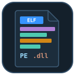

ELF Viewer & PE Viewer (DLL, EXE, Mach-O Headers, Sections, Imports)
ELF Viewer & PE Viewer (DLL, EXE, Mach-O Headers, Sections, Imports), a VS Code extension by Zovo
Open a .so, .o, .exe, .dll, .sys or .dylib file in VS Code and read its structure: headers, sections, segments, imports, exports, symbols and the raw bytes. One viewer for Linux and Unix ELF, Windows PE and Apple Mach-O files, universal binaries included. Read-only, no network, fast on 500 MB files.
Free, MIT license. Needs VS Code 1.90.0 or newer. Extension ID zovo.zovo-elf-pe-viewer, version 0.1.2.

Questions people ask
Is ELF Viewer & PE Viewer (DLL, EXE, Mach-O Headers, Sections, Imports) free?
Yes. ELF Viewer & PE Viewer (DLL, EXE, Mach-O Headers, Sections, Imports) is free and MIT licensed.
How do I install ELF Viewer & PE Viewer (DLL, EXE, Mach-O Headers, Sections, Imports)?
Click "Install in VS Code" above, or search for zovo.zovo-elf-pe-viewer in the Extensions view.
What you see
| Format | Files | Tabs |
|---|---|---|
| ELF (32 and 64-bit, little and big endian) | .so, .so.1, .o, .ko, .elf, .axf, Linux executables | Header, sections, segments (program headers), imports with library and version, exports, symbols (.symtab and .dynsym), dynamic section, notes (build ID) |
| PE (PE32 and PE32+) | .exe, .dll, .sys, .efi, .ocx, .pyd, .cpl, .scr | DOS, COFF and optional headers, data directories, sections, imports by name and ordinal, delay-load imports, exports with forwarders, resources, debug info (PDB path), .NET runtime |
| Mach-O (32 and 64-bit, universal) | .dylib, .bundle, macOS and iOS executables | Header, load commands, segments and sections, linked libraries, imports with the library of each symbol, exports (export trie), symbols, UUID, platform and SDK |
- Overview first: architecture, type, entry point, linked libraries, security flags (ASLR, DEP, Control Flow Guard), signature, build ID, PDB path.
- Every table can be filtered, sorted by any column and copied as tab-separated text. Tables with 100,000 rows scroll smoothly.
- Bytes behind every row: the
byteslink on a section, segment or load command, and the offset next to each header field, open the Hex tab with those bytes marked. - Field tree: every header field with its offset, size and value, from the same binary templates as Hex Viewer.
- Universal binaries: pick the architecture (for example arm64 or x86_64) at the top; each slice is read on its own.

Open a file
- Click a
.exe,.dll,.soor.dylibfile in the Explorer. It opens in the viewer. - Files without an extension (Linux and macOS executables): right-click, Open in ELF & PE Viewer. Or use Open With... and pick ELF & PE Viewer (any file).
- Command Palette: ELF & PE Viewer: Open in ELF & PE Viewer.
Free and Pro
Everything above is free, with no limit and no sign-in. Three Zovo Pro tools save time on bigger jobs. Each has 3 free tries on your computer, and a try counts only when the tool gives you a result.
| Tool | Free | Zovo Pro |
|---|---|---|
| Headers, sections, segments, imports, exports, symbols, hex view, field tree, filter and copy | yes | yes |
| Export the structure as JSON or as a C header (one struct and one const array per table) | 3 tries | yes |
| Compare two binaries: changed header fields, added and removed sections, libraries, imports and exports | 3 tries | yes |
| Find a symbol, import or library name in every binary of a folder (plain text or /regex/) | 3 tries | yes |
Zovo Pro is USD 19 once and turns on the Pro tools in every Zovo extension. Nothing about Pro shows when you open a file; it only comes up when you click one of the three tools. To hide the buttons, set elfPeViewer.showProTools to false.

Safe with any file
- The file is read in a separate worker thread with a time and memory limit. A broken or hostile file gives a message and the part that could be read; it cannot freeze VS Code.
- Every offset and count from the file is checked against the file size. Loops in import tables, resource trees and export tries are detected.
- Read-only: the extension never writes to the binary.
- No network and no telemetry. The viewer gets every byte from VS Code, not from the internet.
Commands
| Command | What it does |
|---|---|
| ELF & PE Viewer: Open in ELF & PE Viewer | Open any file (also in the Explorer right-click menu) |
| ELF & PE Viewer: Open a sample ELF file | A small sample to try the viewer |
| ELF & PE Viewer: Export structure as JSON (Pro) | Save the parsed structure |
| ELF & PE Viewer: Export structure as C header (Pro) | Save the structure as C declarations |
| ELF & PE Viewer: Compare two binaries (Pro) | What changed between two builds |
| ELF & PE Viewer: Find a symbol or import in a folder (Pro) | Search every binary of a folder |
Settings
| Setting | Default | |
|---|---|---|
elfPeViewer.showProTools | true | Show the Export, Compare and Find in folder buttons |
elfPeViewer.showSupportLinks | true | Show the small links at the bottom of the viewer |
elfPeViewer.askForRating | true | Ask once, after a few days, whether you want to rate it |
Limits
- Static libraries (
.aarchives), Java class files, WebAssembly and DEX files are not read here. Hex Viewer opens them with templates. - Tables stop at 100,000 rows each, and reading stops after 10 seconds; the viewer says so when it happens.
- No disassembly.
- Files on remote or virtual file systems are read up to 256 MB.
Works in VS Code 1.90 and later, Cursor, Windsurf and VSCodium.
Install ELF Viewer & PE Viewer (DLL, EXE, Mach-O Headers, Sections, Imports)
Click the button to open VS Code and install it, or press Ctrl+P (Cmd+P on macOS) in VS Code and run ext install zovo.zovo-elf-pe-viewer.
Free, MIT license. Needs VS Code 1.90.0 or newer. Extension ID zovo.zovo-elf-pe-viewer, version 0.1.2.
Source code and issues are on GitHub.
Zovo Pro and support
Zovo Pro: USD 19 once, every Zovo viewer. It turns on the Pro tools in this extension and in the other Zovo extensions you use. The free features stay free.
After a card payment your license key shows on the next page. Paste it with the command "Zovo Pro: Enter a key".
You can also support the work with no Pro:
Need your format supported?
Open a format request with a sample file, and I reply there whether it can be done. For USD 299 once, through this GitHub Sponsors tier, I add your file format or a missing feature to this extension, with tests, within 7 days.